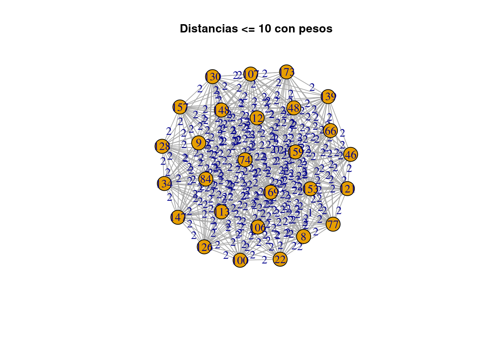

Chapter 4 Regresion, reglas de asociación y Clustering
4.1 Regresion
library(dplyr)
library(tidyverse)
library(ggplot2)
library(readr)
virusTotal <- read.csv('~/Documentos/LCC/ProyectoVT/Proyecto/virusTotal.csv')
virusTotal <- virusTotal %>%
mutate(Year = substr(virusTotal$first_seen, 0, 4))
virusTotal <- virusTotal %>%
rename(country = submission.submitter_country)
virusTotal <- virusTotal %>%
rename(file_type = additional_info.exiftool.FileType)Pasamos el tamaño de los archivos a MB
virusTotal <- virusTotal %>%
mutate(size = virusTotal$size/1000000)Vamos a ver todas las gráficas de nuestro dataset:
plot(virusTotal)Como vemos no parece que tengamos una relación directa por parte de dos variables, hemos pensado que estaría bien analizar o ver si hay una relacion entre el tamaño que tiene un archivo y si es positivo o no, ya que podriamos pensar de que al pesar más un archivo es más propenso a traer algun tipo de software malicioso.
Vamos a analizar el tamaño frente al numero de positivos para ver si existe algun tipo de correlación
ggplot2::ggplot(virusTotal,aes(x=size, y=positives))+geom_point()+geom_line()f1 <- lm(positives~size, data = virusTotal)
plot(f1)
Vemos un resumen del modelo
summary(f1)##
## Call:
## lm(formula = positives ~ size, data = virusTotal)
##
## Residuals:
## Min 1Q Median 3Q Max
## -6.8717 -2.9135 -0.8898 3.0855 15.3370
##
## Coefficients:
## Estimate Std. Error t value Pr(>|t|)
## (Intercept) 21.91526 0.34738 63.088 < 2e-16 ***
## size -0.06463 0.01984 -3.258 0.00134 **
## ---
## Signif. codes: 0 '***' 0.001 '**' 0.01 '*' 0.05 '.' 0.1 ' ' 1
##
## Residual standard error: 4.45 on 181 degrees of freedom
## Multiple R-squared: 0.0554, Adjusted R-squared: 0.05018
## F-statistic: 10.62 on 1 and 181 DF, p-value: 0.001339De aqui podemos sacar que la correlacion es practicamente nula, solo el 5,54% de la variabilidad de los positivos tiene que ver con el tamaño, por lo tanto nuestro primer acercamiento es erróneo, y no podemos aceptar la hipótesis alternativa.
No obstante, hemos dibujado la grafica y observamos que la tendencia es a tener menor numero de positivos cuanto mayor sea el tamaño del archivo analizado. Pero teniendo el cuenta los valores de R^2 ajustado y el p valor, este modelo no sirve para predecir.
ggplot(virusTotal, aes(x = size, y = positives)) +
geom_point() +
geom_line(aes(x = size, y = predict(f1,virusTotal)),col="blue") + geom_line()4.2 Reglas de asociación
library(arules)Utilizamos apriori para buscar todas las reglas posibles con suporte > 0.28 y confianza > 0.27. Hemos impuesto una longitud mínima de dos para filtrar las reglas con antecedente vacío.
mis_reglas <- apriori(virusTotal, parameter = list(supp = 0.28818, conf = 0.27634, minlen=2))## Apriori
##
## Parameter specification:
## confidence minval smax arem aval originalSupport maxtime support minlen maxlen target ext
## 0.27634 0.1 1 none FALSE TRUE 5 0.28818 2 10 rules TRUE
##
## Algorithmic control:
## filter tree heap memopt load sort verbose
## 0.1 TRUE TRUE FALSE TRUE 2 TRUE
##
## Absolute minimum support count: 52
##
## set item appearances ...[0 item(s)] done [0.00s].
## set transactions ...[414 item(s), 183 transaction(s)] done [0.00s].
## sorting and recoding items ... [27 item(s)] done [0.00s].
## creating transaction tree ... done [0.00s].
## checking subsets of size 1 2 3 4 done [0.00s].
## writing ... [153 rule(s)] done [0.00s].
## creating S4 object ... done [0.00s].length(mis_reglas)## [1] 153Este es el numero de reglas que podemos encontrar en nuestro dataset El resumen de las reglas obtenidas sería el siguiente:
summary(mis_reglas)## set of 153 rules
##
## rule length distribution (lhs + rhs):sizes
## 2 3 4
## 70 63 20
##
## Min. 1st Qu. Median Mean 3rd Qu. Max.
## 2.000 2.000 3.000 2.673 3.000 4.000
##
## summary of quality measures:
## support confidence coverage lift count
## Min. :0.2896 Min. :0.4240 Min. :0.2896 Min. :1.158 Min. : 53.00
## 1st Qu.:0.3060 1st Qu.:0.9474 1st Qu.:0.3333 1st Qu.:1.500 1st Qu.: 56.00
## Median :0.3333 Median :1.0000 Median :0.3333 Median :3.000 Median : 61.00
## Mean :0.3362 Mean :0.9172 Mean :0.3845 Mean :2.388 Mean : 61.53
## 3rd Qu.:0.3333 3rd Qu.:1.0000 3rd Qu.:0.3333 3rd Qu.:3.000 3rd Qu.: 61.00
## Max. :0.6339 Max. :1.0000 Max. :0.6831 Max. :3.155 Max. :116.00
##
## mining info:
## data ntransactions support confidence
## virusTotal 183 0.28818 0.27634
## call
## apriori(data = virusTotal, parameter = list(supp = 0.28818, conf = 0.27634, minlen = 2))Como podemos ver en el resumen, nos muestran datos de las reglas generadas, podemos ver por ejemplo que la media obtenida en el soporte es de 0.28818 lo cual no es muy alto e indica que la media de las reglas obtenidas no son muy frecuentes. La confianza tenemos una media de 0.27634 lo cual nos dice que la media en el dataset indica que el 27,63% de las X tambien contienen a Y.
Estas son todas las reglas calculadas
inspect(mis_reglas)## lhs rhs support confidence coverage lift count
## [1] {country=CA} => {times_submitted=[1,2)} 0.3060109 1.0000000 0.3060109 1.811881 56
## [2] {times_submitted=[1,2)} => {country=CA} 0.3060109 0.5544554 0.5519126 1.811881 56
## [3] {country=CA} => {Year=2021} 0.3060109 1.0000000 0.3060109 1.500000 56
## [4] {Year=2021} => {country=CA} 0.3060109 0.4590164 0.6666667 1.500000 56
## [5] {country=CA} => {file_type=ZIP} 0.3060109 1.0000000 0.3060109 1.464000 56
## [6] {file_type=ZIP} => {country=CA} 0.3060109 0.4480000 0.6830601 1.464000 56
## [7] {file_type=DEX} => {country=CZ} 0.3169399 1.0000000 0.3169399 3.155172 58
## [8] {country=CZ} => {file_type=DEX} 0.3169399 1.0000000 0.3169399 3.155172 58
## [9] {file_type=DEX} => {times_submitted=[2,3.54e+03]} 0.2950820 0.9310345 0.3169399 2.077796 54
## [10] {times_submitted=[2,3.54e+03]} => {file_type=DEX} 0.2950820 0.6585366 0.4480874 2.077796 54
## [11] {country=CZ} => {times_submitted=[2,3.54e+03]} 0.2950820 0.9310345 0.3169399 2.077796 54
## [12] {times_submitted=[2,3.54e+03]} => {country=CZ} 0.2950820 0.6585366 0.4480874 2.077796 54
## [13] {...2=[122,183]} => {...3=[122,183]} 0.3333333 1.0000000 0.3333333 3.000000 61
## [14] {...3=[122,183]} => {...2=[122,183]} 0.3333333 1.0000000 0.3333333 3.000000 61
## [15] {...2=[122,183]} => {X=[122,183]} 0.3333333 1.0000000 0.3333333 3.000000 61
## [16] {X=[122,183]} => {...2=[122,183]} 0.3333333 1.0000000 0.3333333 3.000000 61
## [17] {...2=[122,183]} => {...1=[122,183]} 0.3333333 1.0000000 0.3333333 3.000000 61
## [18] {...1=[122,183]} => {...2=[122,183]} 0.3333333 1.0000000 0.3333333 3.000000 61
## [19] {...3=[122,183]} => {X=[122,183]} 0.3333333 1.0000000 0.3333333 3.000000 61
## [20] {X=[122,183]} => {...3=[122,183]} 0.3333333 1.0000000 0.3333333 3.000000 61
## [21] {...3=[122,183]} => {...1=[122,183]} 0.3333333 1.0000000 0.3333333 3.000000 61
## [22] {...1=[122,183]} => {...3=[122,183]} 0.3333333 1.0000000 0.3333333 3.000000 61
## [23] {X=[122,183]} => {...1=[122,183]} 0.3333333 1.0000000 0.3333333 3.000000 61
## [24] {...1=[122,183]} => {X=[122,183]} 0.3333333 1.0000000 0.3333333 3.000000 61
## [25] {size=[3.03,178]} => {Year=2021} 0.2896175 0.8688525 0.3333333 1.303279 53
## [26] {Year=2021} => {size=[3.03,178]} 0.2896175 0.4344262 0.6666667 1.303279 53
## [27] {size=[3.03,178]} => {file_type=ZIP} 0.3005464 0.9016393 0.3333333 1.320000 55
## [28] {file_type=ZIP} => {size=[3.03,178]} 0.3005464 0.4400000 0.6830601 1.320000 55
## [29] {X=[61.7,122)} => {...1=[61.7,122)} 0.3333333 1.0000000 0.3333333 3.000000 61
## [30] {...1=[61.7,122)} => {X=[61.7,122)} 0.3333333 1.0000000 0.3333333 3.000000 61
## [31] {X=[61.7,122)} => {...2=[61.7,122)} 0.3333333 1.0000000 0.3333333 3.000000 61
## [32] {...2=[61.7,122)} => {X=[61.7,122)} 0.3333333 1.0000000 0.3333333 3.000000 61
## [33] {X=[61.7,122)} => {...3=[61.7,122)} 0.3333333 1.0000000 0.3333333 3.000000 61
## [34] {...3=[61.7,122)} => {X=[61.7,122)} 0.3333333 1.0000000 0.3333333 3.000000 61
## [35] {...1=[61.7,122)} => {...2=[61.7,122)} 0.3333333 1.0000000 0.3333333 3.000000 61
## [36] {...2=[61.7,122)} => {...1=[61.7,122)} 0.3333333 1.0000000 0.3333333 3.000000 61
## [37] {...1=[61.7,122)} => {...3=[61.7,122)} 0.3333333 1.0000000 0.3333333 3.000000 61
## [38] {...3=[61.7,122)} => {...1=[61.7,122)} 0.3333333 1.0000000 0.3333333 3.000000 61
## [39] {...2=[61.7,122)} => {...3=[61.7,122)} 0.3333333 1.0000000 0.3333333 3.000000 61
## [40] {...3=[61.7,122)} => {...2=[61.7,122)} 0.3333333 1.0000000 0.3333333 3.000000 61
## [41] {...1=[1,61.7)} => {...2=[1,61.7)} 0.3333333 1.0000000 0.3333333 3.000000 61
## [42] {...2=[1,61.7)} => {...1=[1,61.7)} 0.3333333 1.0000000 0.3333333 3.000000 61
## [43] {...1=[1,61.7)} => {...3=[1,61.7)} 0.3333333 1.0000000 0.3333333 3.000000 61
## [44] {...3=[1,61.7)} => {...1=[1,61.7)} 0.3333333 1.0000000 0.3333333 3.000000 61
## [45] {...1=[1,61.7)} => {X=[1,61.7)} 0.3333333 1.0000000 0.3333333 3.000000 61
## [46] {X=[1,61.7)} => {...1=[1,61.7)} 0.3333333 1.0000000 0.3333333 3.000000 61
## [47] {...2=[1,61.7)} => {...3=[1,61.7)} 0.3333333 1.0000000 0.3333333 3.000000 61
## [48] {...3=[1,61.7)} => {...2=[1,61.7)} 0.3333333 1.0000000 0.3333333 3.000000 61
## [49] {...2=[1,61.7)} => {X=[1,61.7)} 0.3333333 1.0000000 0.3333333 3.000000 61
## [50] {X=[1,61.7)} => {...2=[1,61.7)} 0.3333333 1.0000000 0.3333333 3.000000 61
## [51] {...3=[1,61.7)} => {X=[1,61.7)} 0.3333333 1.0000000 0.3333333 3.000000 61
## [52] {X=[1,61.7)} => {...3=[1,61.7)} 0.3333333 1.0000000 0.3333333 3.000000 61
## [53] {size=[1.85,3.03)} => {times_submitted=[1,2)} 0.2950820 0.8852459 0.3333333 1.603960 54
## [54] {times_submitted=[1,2)} => {size=[1.85,3.03)} 0.2950820 0.5346535 0.5519126 1.603960 54
## [55] {size=[1.85,3.03)} => {Year=2021} 0.3114754 0.9344262 0.3333333 1.401639 57
## [56] {Year=2021} => {size=[1.85,3.03)} 0.3114754 0.4672131 0.6666667 1.401639 57
## [57] {size=[1.85,3.03)} => {file_type=ZIP} 0.3005464 0.9016393 0.3333333 1.320000 55
## [58] {file_type=ZIP} => {size=[1.85,3.03)} 0.3005464 0.4400000 0.6830601 1.320000 55
## [59] {positives=[19,23)} => {file_type=ZIP} 0.2896175 0.7910448 0.3661202 1.158090 53
## [60] {file_type=ZIP} => {positives=[19,23)} 0.2896175 0.4240000 0.6830601 1.158090 53
## [61] {total=[62,64]} => {Year=2021} 0.3497268 0.8888889 0.3934426 1.333333 64
## [62] {Year=2021} => {total=[62,64]} 0.3497268 0.5245902 0.6666667 1.333333 64
## [63] {total=[62,64]} => {file_type=ZIP} 0.3934426 1.0000000 0.3934426 1.464000 72
## [64] {file_type=ZIP} => {total=[62,64]} 0.3934426 0.5760000 0.6830601 1.464000 72
## [65] {times_submitted=[1,2)} => {Year=2021} 0.5519126 1.0000000 0.5519126 1.500000 101
## [66] {Year=2021} => {times_submitted=[1,2)} 0.5519126 0.8278689 0.6666667 1.500000 101
## [67] {times_submitted=[1,2)} => {file_type=ZIP} 0.5300546 0.9603960 0.5519126 1.406020 97
## [68] {file_type=ZIP} => {times_submitted=[1,2)} 0.5300546 0.7760000 0.6830601 1.406020 97
## [69] {Year=2021} => {file_type=ZIP} 0.6338798 0.9508197 0.6666667 1.392000 116
## [70] {file_type=ZIP} => {Year=2021} 0.6338798 0.9280000 0.6830601 1.392000 116
## [71] {times_submitted=[1,2),
## country=CA} => {Year=2021} 0.3060109 1.0000000 0.3060109 1.500000 56
## [72] {country=CA,
## Year=2021} => {times_submitted=[1,2)} 0.3060109 1.0000000 0.3060109 1.811881 56
## [73] {times_submitted=[1,2),
## Year=2021} => {country=CA} 0.3060109 0.5544554 0.5519126 1.811881 56
## [74] {times_submitted=[1,2),
## country=CA} => {file_type=ZIP} 0.3060109 1.0000000 0.3060109 1.464000 56
## [75] {country=CA,
## file_type=ZIP} => {times_submitted=[1,2)} 0.3060109 1.0000000 0.3060109 1.811881 56
## [76] {times_submitted=[1,2),
## file_type=ZIP} => {country=CA} 0.3060109 0.5773196 0.5300546 1.886598 56
## [77] {country=CA,
## Year=2021} => {file_type=ZIP} 0.3060109 1.0000000 0.3060109 1.464000 56
## [78] {country=CA,
## file_type=ZIP} => {Year=2021} 0.3060109 1.0000000 0.3060109 1.500000 56
## [79] {file_type=ZIP,
## Year=2021} => {country=CA} 0.3060109 0.4827586 0.6338798 1.577586 56
## [80] {country=CZ,
## file_type=DEX} => {times_submitted=[2,3.54e+03]} 0.2950820 0.9310345 0.3169399 2.077796 54
## [81] {times_submitted=[2,3.54e+03],
## file_type=DEX} => {country=CZ} 0.2950820 1.0000000 0.2950820 3.155172 54
## [82] {times_submitted=[2,3.54e+03],
## country=CZ} => {file_type=DEX} 0.2950820 1.0000000 0.2950820 3.155172 54
## [83] {...2=[122,183],
## ...3=[122,183]} => {X=[122,183]} 0.3333333 1.0000000 0.3333333 3.000000 61
## [84] {X=[122,183],
## ...2=[122,183]} => {...3=[122,183]} 0.3333333 1.0000000 0.3333333 3.000000 61
## [85] {X=[122,183],
## ...3=[122,183]} => {...2=[122,183]} 0.3333333 1.0000000 0.3333333 3.000000 61
## [86] {...2=[122,183],
## ...3=[122,183]} => {...1=[122,183]} 0.3333333 1.0000000 0.3333333 3.000000 61
## [87] {...1=[122,183],
## ...2=[122,183]} => {...3=[122,183]} 0.3333333 1.0000000 0.3333333 3.000000 61
## [88] {...1=[122,183],
## ...3=[122,183]} => {...2=[122,183]} 0.3333333 1.0000000 0.3333333 3.000000 61
## [89] {X=[122,183],
## ...2=[122,183]} => {...1=[122,183]} 0.3333333 1.0000000 0.3333333 3.000000 61
## [90] {...1=[122,183],
## ...2=[122,183]} => {X=[122,183]} 0.3333333 1.0000000 0.3333333 3.000000 61
## [91] {X=[122,183],
## ...1=[122,183]} => {...2=[122,183]} 0.3333333 1.0000000 0.3333333 3.000000 61
## [92] {X=[122,183],
## ...3=[122,183]} => {...1=[122,183]} 0.3333333 1.0000000 0.3333333 3.000000 61
## [93] {...1=[122,183],
## ...3=[122,183]} => {X=[122,183]} 0.3333333 1.0000000 0.3333333 3.000000 61
## [94] {X=[122,183],
## ...1=[122,183]} => {...3=[122,183]} 0.3333333 1.0000000 0.3333333 3.000000 61
## [95] {X=[61.7,122),
## ...1=[61.7,122)} => {...2=[61.7,122)} 0.3333333 1.0000000 0.3333333 3.000000 61
## [96] {X=[61.7,122),
## ...2=[61.7,122)} => {...1=[61.7,122)} 0.3333333 1.0000000 0.3333333 3.000000 61
## [97] {...1=[61.7,122),
## ...2=[61.7,122)} => {X=[61.7,122)} 0.3333333 1.0000000 0.3333333 3.000000 61
## [98] {X=[61.7,122),
## ...1=[61.7,122)} => {...3=[61.7,122)} 0.3333333 1.0000000 0.3333333 3.000000 61
## [99] {X=[61.7,122),
## ...3=[61.7,122)} => {...1=[61.7,122)} 0.3333333 1.0000000 0.3333333 3.000000 61
## [100] {...1=[61.7,122),
## ...3=[61.7,122)} => {X=[61.7,122)} 0.3333333 1.0000000 0.3333333 3.000000 61
## [101] {X=[61.7,122),
## ...2=[61.7,122)} => {...3=[61.7,122)} 0.3333333 1.0000000 0.3333333 3.000000 61
## [102] {X=[61.7,122),
## ...3=[61.7,122)} => {...2=[61.7,122)} 0.3333333 1.0000000 0.3333333 3.000000 61
## [103] {...2=[61.7,122),
## ...3=[61.7,122)} => {X=[61.7,122)} 0.3333333 1.0000000 0.3333333 3.000000 61
## [104] {...1=[61.7,122),
## ...2=[61.7,122)} => {...3=[61.7,122)} 0.3333333 1.0000000 0.3333333 3.000000 61
## [105] {...1=[61.7,122),
## ...3=[61.7,122)} => {...2=[61.7,122)} 0.3333333 1.0000000 0.3333333 3.000000 61
## [106] {...2=[61.7,122),
## ...3=[61.7,122)} => {...1=[61.7,122)} 0.3333333 1.0000000 0.3333333 3.000000 61
## [107] {...1=[1,61.7),
## ...2=[1,61.7)} => {...3=[1,61.7)} 0.3333333 1.0000000 0.3333333 3.000000 61
## [108] {...1=[1,61.7),
## ...3=[1,61.7)} => {...2=[1,61.7)} 0.3333333 1.0000000 0.3333333 3.000000 61
## [109] {...2=[1,61.7),
## ...3=[1,61.7)} => {...1=[1,61.7)} 0.3333333 1.0000000 0.3333333 3.000000 61
## [110] {...1=[1,61.7),
## ...2=[1,61.7)} => {X=[1,61.7)} 0.3333333 1.0000000 0.3333333 3.000000 61
## [111] {X=[1,61.7),
## ...1=[1,61.7)} => {...2=[1,61.7)} 0.3333333 1.0000000 0.3333333 3.000000 61
## [112] {X=[1,61.7),
## ...2=[1,61.7)} => {...1=[1,61.7)} 0.3333333 1.0000000 0.3333333 3.000000 61
## [113] {...1=[1,61.7),
## ...3=[1,61.7)} => {X=[1,61.7)} 0.3333333 1.0000000 0.3333333 3.000000 61
## [114] {X=[1,61.7),
## ...1=[1,61.7)} => {...3=[1,61.7)} 0.3333333 1.0000000 0.3333333 3.000000 61
## [115] {X=[1,61.7),
## ...3=[1,61.7)} => {...1=[1,61.7)} 0.3333333 1.0000000 0.3333333 3.000000 61
## [116] {...2=[1,61.7),
## ...3=[1,61.7)} => {X=[1,61.7)} 0.3333333 1.0000000 0.3333333 3.000000 61
## [117] {X=[1,61.7),
## ...2=[1,61.7)} => {...3=[1,61.7)} 0.3333333 1.0000000 0.3333333 3.000000 61
## [118] {X=[1,61.7),
## ...3=[1,61.7)} => {...2=[1,61.7)} 0.3333333 1.0000000 0.3333333 3.000000 61
## [119] {size=[1.85,3.03),
## times_submitted=[1,2)} => {Year=2021} 0.2950820 1.0000000 0.2950820 1.500000 54
## [120] {size=[1.85,3.03),
## Year=2021} => {times_submitted=[1,2)} 0.2950820 0.9473684 0.3114754 1.716519 54
## [121] {times_submitted=[1,2),
## Year=2021} => {size=[1.85,3.03)} 0.2950820 0.5346535 0.5519126 1.603960 54
## [122] {size=[1.85,3.03),
## times_submitted=[1,2)} => {file_type=ZIP} 0.2896175 0.9814815 0.2950820 1.436889 53
## [123] {size=[1.85,3.03),
## file_type=ZIP} => {times_submitted=[1,2)} 0.2896175 0.9636364 0.3005464 1.745995 53
## [124] {times_submitted=[1,2),
## file_type=ZIP} => {size=[1.85,3.03)} 0.2896175 0.5463918 0.5300546 1.639175 53
## [125] {size=[1.85,3.03),
## Year=2021} => {file_type=ZIP} 0.2950820 0.9473684 0.3114754 1.386947 54
## [126] {size=[1.85,3.03),
## file_type=ZIP} => {Year=2021} 0.2950820 0.9818182 0.3005464 1.472727 54
## [127] {file_type=ZIP,
## Year=2021} => {size=[1.85,3.03)} 0.2950820 0.4655172 0.6338798 1.396552 54
## [128] {total=[62,64],
## Year=2021} => {file_type=ZIP} 0.3497268 1.0000000 0.3497268 1.464000 64
## [129] {total=[62,64],
## file_type=ZIP} => {Year=2021} 0.3497268 0.8888889 0.3934426 1.333333 64
## [130] {file_type=ZIP,
## Year=2021} => {total=[62,64]} 0.3497268 0.5517241 0.6338798 1.402299 64
## [131] {times_submitted=[1,2),
## Year=2021} => {file_type=ZIP} 0.5300546 0.9603960 0.5519126 1.406020 97
## [132] {times_submitted=[1,2),
## file_type=ZIP} => {Year=2021} 0.5300546 1.0000000 0.5300546 1.500000 97
## [133] {file_type=ZIP,
## Year=2021} => {times_submitted=[1,2)} 0.5300546 0.8362069 0.6338798 1.515108 97
## [134] {times_submitted=[1,2),
## country=CA,
## Year=2021} => {file_type=ZIP} 0.3060109 1.0000000 0.3060109 1.464000 56
## [135] {times_submitted=[1,2),
## country=CA,
## file_type=ZIP} => {Year=2021} 0.3060109 1.0000000 0.3060109 1.500000 56
## [136] {country=CA,
## file_type=ZIP,
## Year=2021} => {times_submitted=[1,2)} 0.3060109 1.0000000 0.3060109 1.811881 56
## [137] {times_submitted=[1,2),
## file_type=ZIP,
## Year=2021} => {country=CA} 0.3060109 0.5773196 0.5300546 1.886598 56
## [138] {X=[122,183],
## ...2=[122,183],
## ...3=[122,183]} => {...1=[122,183]} 0.3333333 1.0000000 0.3333333 3.000000 61
## [139] {...1=[122,183],
## ...2=[122,183],
## ...3=[122,183]} => {X=[122,183]} 0.3333333 1.0000000 0.3333333 3.000000 61
## [140] {X=[122,183],
## ...1=[122,183],
## ...2=[122,183]} => {...3=[122,183]} 0.3333333 1.0000000 0.3333333 3.000000 61
## [141] {X=[122,183],
## ...1=[122,183],
## ...3=[122,183]} => {...2=[122,183]} 0.3333333 1.0000000 0.3333333 3.000000 61
## [142] {X=[61.7,122),
## ...1=[61.7,122),
## ...2=[61.7,122)} => {...3=[61.7,122)} 0.3333333 1.0000000 0.3333333 3.000000 61
## [143] {X=[61.7,122),
## ...1=[61.7,122),
## ...3=[61.7,122)} => {...2=[61.7,122)} 0.3333333 1.0000000 0.3333333 3.000000 61
## [144] {X=[61.7,122),
## ...2=[61.7,122),
## ...3=[61.7,122)} => {...1=[61.7,122)} 0.3333333 1.0000000 0.3333333 3.000000 61
## [145] {...1=[61.7,122),
## ...2=[61.7,122),
## ...3=[61.7,122)} => {X=[61.7,122)} 0.3333333 1.0000000 0.3333333 3.000000 61
## [146] {...1=[1,61.7),
## ...2=[1,61.7),
## ...3=[1,61.7)} => {X=[1,61.7)} 0.3333333 1.0000000 0.3333333 3.000000 61
## [147] {X=[1,61.7),
## ...1=[1,61.7),
## ...2=[1,61.7)} => {...3=[1,61.7)} 0.3333333 1.0000000 0.3333333 3.000000 61
## [148] {X=[1,61.7),
## ...1=[1,61.7),
## ...3=[1,61.7)} => {...2=[1,61.7)} 0.3333333 1.0000000 0.3333333 3.000000 61
## [149] {X=[1,61.7),
## ...2=[1,61.7),
## ...3=[1,61.7)} => {...1=[1,61.7)} 0.3333333 1.0000000 0.3333333 3.000000 61
## [150] {size=[1.85,3.03),
## times_submitted=[1,2),
## Year=2021} => {file_type=ZIP} 0.2896175 0.9814815 0.2950820 1.436889 53
## [151] {size=[1.85,3.03),
## times_submitted=[1,2),
## file_type=ZIP} => {Year=2021} 0.2896175 1.0000000 0.2896175 1.500000 53
## [152] {size=[1.85,3.03),
## file_type=ZIP,
## Year=2021} => {times_submitted=[1,2)} 0.2896175 0.9814815 0.2950820 1.778328 53
## [153] {times_submitted=[1,2),
## file_type=ZIP,
## Year=2021} => {size=[1.85,3.03)} 0.2896175 0.5463918 0.5300546 1.639175 53Vamos a ordenar las reglas por lift y mostramos las diez reglas con más lift
mis_reglas_lift <- sort(mis_reglas, by = "lift")
inspect(mis_reglas_lift[1:10])## lhs rhs support confidence
## [1] {file_type=DEX} => {country=CZ} 0.3169399 1
## [2] {country=CZ} => {file_type=DEX} 0.3169399 1
## [3] {times_submitted=[2,3.54e+03], file_type=DEX} => {country=CZ} 0.2950820 1
## [4] {times_submitted=[2,3.54e+03], country=CZ} => {file_type=DEX} 0.2950820 1
## [5] {...2=[122,183]} => {...3=[122,183]} 0.3333333 1
## [6] {...3=[122,183]} => {...2=[122,183]} 0.3333333 1
## [7] {...2=[122,183]} => {X=[122,183]} 0.3333333 1
## [8] {X=[122,183]} => {...2=[122,183]} 0.3333333 1
## [9] {...2=[122,183]} => {...1=[122,183]} 0.3333333 1
## [10] {...1=[122,183]} => {...2=[122,183]} 0.3333333 1
## coverage lift count
## [1] 0.3169399 3.155172 58
## [2] 0.3169399 3.155172 58
## [3] 0.2950820 3.155172 54
## [4] 0.2950820 3.155172 54
## [5] 0.3333333 3.000000 61
## [6] 0.3333333 3.000000 61
## [7] 0.3333333 3.000000 61
## [8] 0.3333333 3.000000 61
## [9] 0.3333333 3.000000 61
## [10] 0.3333333 3.000000 61Vamos a ordenar las reglas por support y mostramos las diez reglas con más soporte
mis_reglas_support <- sort(mis_reglas, by = "support")
inspect(mis_reglas_support[1:10])## lhs rhs support confidence
## [1] {Year=2021} => {file_type=ZIP} 0.6338798 0.9508197
## [2] {file_type=ZIP} => {Year=2021} 0.6338798 0.9280000
## [3] {times_submitted=[1,2)} => {Year=2021} 0.5519126 1.0000000
## [4] {Year=2021} => {times_submitted=[1,2)} 0.5519126 0.8278689
## [5] {times_submitted=[1,2)} => {file_type=ZIP} 0.5300546 0.9603960
## [6] {file_type=ZIP} => {times_submitted=[1,2)} 0.5300546 0.7760000
## [7] {times_submitted=[1,2), Year=2021} => {file_type=ZIP} 0.5300546 0.9603960
## [8] {times_submitted=[1,2), file_type=ZIP} => {Year=2021} 0.5300546 1.0000000
## [9] {file_type=ZIP, Year=2021} => {times_submitted=[1,2)} 0.5300546 0.8362069
## [10] {total=[62,64]} => {file_type=ZIP} 0.3934426 1.0000000
## coverage lift count
## [1] 0.6666667 1.392000 116
## [2] 0.6830601 1.392000 116
## [3] 0.5519126 1.500000 101
## [4] 0.6666667 1.500000 101
## [5] 0.5519126 1.406020 97
## [6] 0.6830601 1.406020 97
## [7] 0.5519126 1.406020 97
## [8] 0.5300546 1.500000 97
## [9] 0.6338798 1.515108 97
## [10] 0.3934426 1.464000 72Como sabemos, el soporte nos indica en qué porcentaje el patrón encontrado aparece en el dataset, y vemos que cuando el año es 2021 en el 63,3% de la veces el tipo de archivo es ZIP.
Vamos a ordenar las reglas por confianza y mostramos las diez reglas con más confianza
mis_reglas_confidence <- sort(mis_reglas, by = "confidence")
inspect(mis_reglas_confidence[1:10])## lhs rhs support confidence coverage lift count
## [1] {country=CA} => {times_submitted=[1,2)} 0.3060109 1 0.3060109 1.811881 56
## [2] {country=CA} => {Year=2021} 0.3060109 1 0.3060109 1.500000 56
## [3] {country=CA} => {file_type=ZIP} 0.3060109 1 0.3060109 1.464000 56
## [4] {file_type=DEX} => {country=CZ} 0.3169399 1 0.3169399 3.155172 58
## [5] {country=CZ} => {file_type=DEX} 0.3169399 1 0.3169399 3.155172 58
## [6] {...2=[122,183]} => {...3=[122,183]} 0.3333333 1 0.3333333 3.000000 61
## [7] {...3=[122,183]} => {...2=[122,183]} 0.3333333 1 0.3333333 3.000000 61
## [8] {...2=[122,183]} => {X=[122,183]} 0.3333333 1 0.3333333 3.000000 61
## [9] {X=[122,183]} => {...2=[122,183]} 0.3333333 1 0.3333333 3.000000 61
## [10] {...2=[122,183]} => {...1=[122,183]} 0.3333333 1 0.3333333 3.000000 61De aquí podemos sacar que el pais CA solo ha enviado archivos de tipo ZIP en 2021, o también como mostramos en la parte de visualización que República Checa siempre envia DEX como tipo de archivo.
4.3 Clustering
library(magrittr)Preparamos el kmeans con 4 centros y usaremos el tamaño frente al numero de positivos
set.seed(1)
virus <- virusTotal %>%
select(c("size","positives"))%>%
kmeans(centers=4, nstart=10)
str(virus)## List of 9
## $ cluster : int [1:183] 4 4 4 2 4 4 4 4 4 2 ...
## $ centers : num [1:4, 1:2] 178.36 1.76 74.81 4.49 15 ...
## ..- attr(*, "dimnames")=List of 2
## .. ..$ : chr [1:4] "1" "2" "3" "4"
## .. ..$ : chr [1:2] "size" "positives"
## $ totss : num 54130
## $ withinss : num [1:4] 0 912 1675 3606
## $ tot.withinss: num 6193
## $ betweenss : num 47937
## $ size : int [1:4] 1 65 3 114
## $ iter : int 2
## $ ifault : int 0
## - attr(*, "class")= chr "kmeans"Vemos el tamaño de los clusters y de los centroides
virus$size## [1] 1 65 3 114virus$centers## size positives
## 1 178.355426 15.00000
## 2 1.761319 26.61538
## 3 74.811670 16.00000
## 4 4.487114 18.86842Ahora vamos a visualizar un grafico del tamaño (eje X) frente al numero de positivos (eje Y), lo dibujaremos con colores según el cluster al que pertenezca y la etiqueta será el tipo de archivo analizado.
Como la gráfica quedaba muy comprimida la vamos a mostrar por partes para un mejor entendimiento
plot(virusTotal$size,virusTotal$positives, type="n",xlim = c(0,10), xlab = "size",ylab = "positives")
text(x=virusTotal$size, y=virusTotal$positives, labels=virusTotal$file_type,
col=virus$cluster+1)Aqui vemos los archivos de entre 0 y 10 MB que es donde se concentran la mayoría
plot(virusTotal$size,virusTotal$positives, type="n",xlim = c(11,100), xlab = "size",ylab = "positives")
text(x=virusTotal$size, y=virusTotal$positives, labels=virusTotal$file_type,
col=virus$cluster+1)
Aqui los archivos entre 11 y 100 MB que aunque haya menos tambien podemos ver los clusters en los que se agrupan
plot(virusTotal$size,virusTotal$positives, type="n", xlab = "size",ylab = "positives")
text(x=virusTotal$size, y=virusTotal$positives, labels=virusTotal$file_type,
col=virus$cluster+1)Y por ultimo aqui ya vemos la gráfica al completo